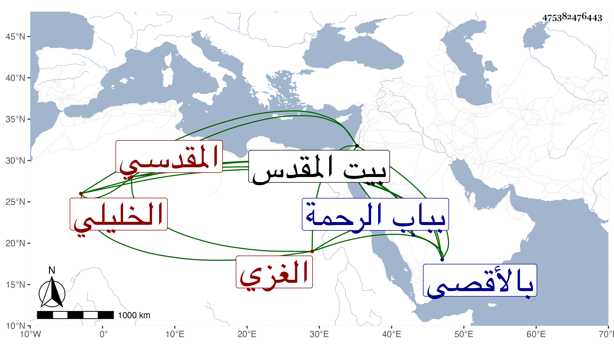

0902Sakhawi.DawLamic.ITO20230111-ara1.EIS1600.475382476443
Biography ID: 475382476443
761
محمد بن عبد الرحمن بن علي الشمس الغزي الأصل الخليلي ثم المقدسي سبط الشمس التدمري . ولد سنة أربع وعشرين وثمانمائة وأحضر في سنة ست وعشرين على جده لأمه وإبراهيم بن حجي بقراءة ابن ناصر الدين المسلسل وجزء ابن عرفة ومن لفظ القارئ جزءا من عواليه ، وناب في إمامة الكاملية بالأقصى، وكان صالحا . مات في يوم الجمعة تاسع ذي القعدة سنة اثنتين وتسعين بالبيمارستان من القدس ودفن بباب الرحمة رحمه الله .
